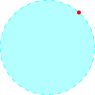

3.2 Closed sets
Examples of non-open set
\(\overline {B(a; r)} = \big \{ z \in \mathbb {C}:\, \left |z - a\right | \leq r\big \}\)
If \(\, z \in \overline {B(a; r)}\,\) is such that \(\, \left |z - a\right | = r\,\) then there is no \(\, \delta > 0 \ni B(z;\delta ) \subseteq \overline {B(a; r)}\).
Example 3.8. \(\mathbb {C}- \overline {B(a; r)} = \underbrace {\big \{z \in \mathbb {C}: \, \left |z - a\right |> r\big \}}_{\text {open set}}\,\) So \(\overline {B(a ; r)}\,\) is a closed set.
Definition 3.9. A point \(z \in \mathbb {C}\) is a limit point of a set \(S\) if
\[\big \{w\in \mathbb {C}: \, 0 < \left |w - z\right | < r\big \} \cap S \neq \emptyset \quad \forall r > 0\]
A point of \(S\) which is not a limit point is called an isolated point of \(S\)

Example 3.10. Any point with \(\,\left |z\right | = 1\,\) is a limit point of the set \(\,\big \{ z \in \mathbb {C}: \, \left |z\right | < 1\big \}\)
Consider \(\,\big \{ z \in \mathbb {C}: \, \left |z\right | < 1\big \} \cup \big \{ 13 + 20 i\big \} = S\,\) then \(13 + 20i\,\) is an isolated point.
Example 3.11. Consider the set \(\, S = \big \{ x + iy\in \mathbb {C}: \, x,y\in \mathbb {R}\big \}\). Show that every complex number is a limit point of \(S\).
Proof.
Let \(\, z = x + i y \in \mathbb {C}\)
\(\lim \, B'(z,\varepsilon ) \cap S \neq \emptyset \)
There are rational numbers \(\, x_0,y_0\ni x < x_0 < x + \frac {\varepsilon }{\sqrt {2}}\,\) and \(\, y < y_0 < y + \frac {\varepsilon }{\sqrt {2}}\)
So \(\, x_0 + iy_0 \in S\,\) and \(\, x_0 + iy_0 \in B'(z,\varepsilon )\)
\[x_0 +iy_0 \in S\cap B'(z,\varepsilon )\]
Hence \(z\) is a limit point of \(S\) □
Example 3.12. Consider the set \(\, S = \Big \{ \frac {1}{k} + i\frac {2}{k}\,:\, k \in \mathbb {Z}\Big \}.\,\) We show that 0 is he limit point of \(S\).
Consider \(\, B'(0,\varepsilon ) , \, \varepsilon > 0.\,\) So by Archimedean property. \(\frac {1}{4n} < \frac {1}{n} < \varepsilon \,\) to get
\[ \frac {1}{4n} + \frac {i}{2n} \in B'(0,\varepsilon ) \cap S\]
So 0 is a limit point of \(S\).
For \(\, z = x + iy\in \mathbb {C}\) and \(z\) not of the form \(x + 2iy\) for some \(x\in \mathbb {R}\) then the \(\perp ^r\) distance of the point from the line say \(\varepsilon _z\) is positive.
Then \(\, B(z,\varepsilon _z) \cap S = \emptyset \). So \(z\) is not a limit point of \(S\).
\(\implies \,\) If \(z = x + iz_x \in \mathbb {C}\, x> 1\) or \(x < -1 \, (x \in \mathbb {R})\) then take \(\varepsilon _z = \left |x - 1\right |\) or \(\varepsilon _z = \left |x + 1\right |\) respectively \[B'(z, \varepsilon _z) \cap S = \emptyset \]
\(\implies \,\) If \(z\) is of the form \(x + 2ix, \, - 1 \leq x \leq 1\) and \(z\not \in S\) then there are integers \[ k, \quad k + 1 \ni \frac {1}{k + 1} < x < \frac {1}{k}\]
Pick \(\, \varepsilon _z = \min \Big \{ \left |x - \frac {1}{k + 1}\right |, \left |x - \frac {1}{k}\right |\Big \}\) \[B(z,\varepsilon _z) \cap S = \emptyset \]
\(\implies \,\) If \(z = x + 2ix\) and \(-1\leq x \leq 1\) and \(z \in S\) there is a \(\, k\ni x = \frac {1}{k}\)
\[\text {take}\quad \varepsilon _2 = \frac {1}{\big (k + 1\big )2}\qquad \Bigg (\frac {1}{k},\frac {1}{k + 1}\Bigg )\]
\(B'(z,\varepsilon _z) \cap S = \emptyset \)
Any point \(\, z \in \mathbb {C}/\{0\}\,\) is not a limit point and \(\, z \in \mathbb {C}/\{0\} \cap S = S\,\) is an isolated point of \(S\).
Definition 3.13. The closure of a set \(\, S\subseteq \mathbb {C},\,\) denoted by \(\overline {S}\), is the union of \(S\) and the set of all limit points of \(S\).
Example 3.14. (Show that every point in \(\mathbb {C}\) is a limit point of \(\quad S = \big \{x + iy:\, x\in \mathbb {Q},\, y \in \mathbb {Q}\big \}\) \[\overline {S} = S\cup \mathbb {C} = \mathbb {C}\]
E.g \(\, S = \Big \{ \frac {1}{k} + i\frac {2}{k}:\, k \in \mathbb {Z}\Big \}\)
\(\overline {S} = \Big \{ \frac {1}{k} + i\frac {2}{k}:\, k \in \mathbb {Z}\Big \}\cup \big \{0\big \}\)
Proposition 3.15. Let \(S\subseteq \mathbb {C}\). \(\overline {S}\) is a closed set in \(\mathbb {C}\).
Proof. Let \(z\in \overline {S}^c\) so \(z\in S\Big (\therefore \overline {S}\supseteq S\Big )\). Also \(z\) is not a limit point of \(S\) which implies
\(\exists \, \varepsilon > 0 \ni B(z;\varepsilon ) \cap S = \emptyset \). (We want to show that \(B(z;\varepsilon )\cap \overline {S} = \emptyset \))
Suppose that \(\, B'(z; \varepsilon ) \cap \overline {S}\neq \emptyset \,\) then there is a limit point of \(S\) in \(B'(z;\varepsilon )\) say \(w\)
\[\left |w - z\right | < \varepsilon \]
Let \(0 < \delta < \varepsilon - \left |w - z\right |\). Then \(B'(w,\delta ) \cap S \neq \emptyset \). (\(\therefore w\) is a limit point)
\(\implies \, B'(z;\varepsilon ) \cap S\neq \emptyset \,\) which is a contradiction. So
\[B(z;\varepsilon ) \cap \overline {S} = \emptyset \implies B(z;\varepsilon ) \subseteq \overline {S}^c\]
\(\implies \, \overline {S}^c\,\) is open in \(\mathbb {C} \implies \overline {S}\) is a closed set. □
Proposition 3.16. Let \(\, S\subseteq \mathbb {C}\), then the following are equivalent
- (i).
- \(S\) is closed (in \(\mathbb {C}\))
- (ii).
- \(S\) contains all its limits points.
- (iii).
- \(\overline {S} = S\)
Proof.
(i) \(\, \implies \,\) (ii) \(\, \implies \,\) (iii) \(\,\implies \,\) (i)
(ii) \(\, \implies \,\) is by definition of closure \(\big (\, \overline {S} = S\cup \big \{\text {limit points of}\, S\big \}\, = S\big )\).
(iii) \(\, \implies \,\) (i) \(\,\overline {S}\) is a closed set and if \(S = \overline {S}\), \(S\) is a closed set.
(i) \(\, \implies \,\) (ii) Suppose \(S\) is closed. (will show: limit points of \(S\) cannot be in \(S^c\)). Suppose \(z \in S^c\) is a limit point
of \(S\). Since \(S^c\) is open \(\, \exists \, \varepsilon > 0 \ni B(z; \varepsilon ) \subseteq S^c\). \(\implies \, B(z;\varepsilon ) \cap S = \emptyset \) which contradicts the assumption that \(z\) is a limit point.
\(\implies \, S\) contains all its limit points. □
Interior Point: Let \(S\subseteq \mathbb {C}\). A point \(z\in S\) is called an interior point of \(S\), if there is \(\, \varepsilon > 0 \ni B(z; \varepsilon ) \subseteq S\).
- 1.
- Every point of an open set is an interior point.
- 2.
- Consider \(\, S = \big \{ x+ iy\in \mathbb {C}:\, x,y \in \mathbb {Q}\big \}\)
Then no point of \(S\) is an interior point.
Fact
Every interior point is a limit point.
Boundary point
\(B(0;1) = \big \{z: \,\left |z\right | < 1\big \}\)
\(\big \{z: \, \left |z\right | = 1\big \}\,\) boundary of \(B(0,1)\).
Definition 3.18. Let \(\, S\subseteq \mathbb {C}\). A point \(z \in \mathbb {C}\) is called a boundary point of \(S\) if \(\, B(z,\varepsilon ) \cap S \neq \emptyset \,\) and \(\, B(z,\varepsilon ) \cap S^c \neq \emptyset \, \forall \varepsilon > 0\).
( So every \(\varepsilon -\) neighbourhood of \(z\) contains points from \(S\) and from \(S^c\)).
Every point of \(\mathbb {C}\) is a boundary point of \(S\).
Exercise 3.19. What is the boundary of \(\quad S = \big \{ z:\,\left |z\right | < 1\big \} \cup \big \{n + 0i: \, n\in \mathbb {Z}\big \}\)
Find the limit points and interior points of \(S\).
Exterior Points:
A point \(z\in \mathbb {C}\) is called an exterior point to a set \(S\subseteq \mathbb {C}\) there is an \(\, \varepsilon > 0 \ni B(z,\varepsilon ) \cap S = \emptyset \).
Facts
- 1.
- Every interior point is a limit point but limit point need not to be an interior point.
- 2.
- Isolated points are never interior points and interiors never isolated.
- 3.
- Every boundary point of a set \(S\) is an isolated point or a limit point.
- 4.
- Every limit point need not be a boundary point.
Questions on this section
Stuck on something here? Ask below and it stays attached to this topic.